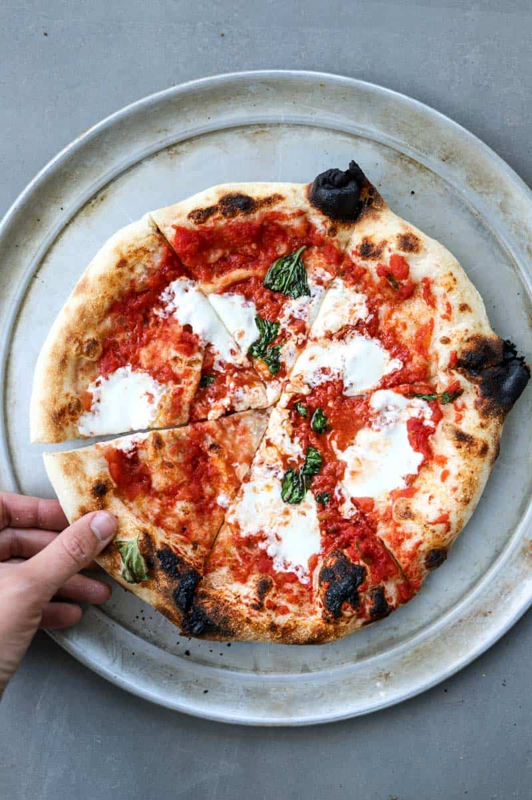

Margherita Pizza

Description
This is a really easy margherita pizza.
Ingredients
Homemade pizza dough
- 2½ cups (300 g) unbleached all-purpose flour
- 1 teaspoon granulated sugar
- ½ teaspoon active dry yeast or SAF instant yeast
- ¾ teaspoon Diamond Crystal kosher salt
- 7 ounces (105°F to 115°F) warm water
- 1 tablespoon extra virgin olive oil
- semolina and all-purpose flour for dusting the pizza peel
Pizza sauce
- 1 cup pureed or crushed canned San Marzano tomatoes (or canned Italian plum tomatoes)
- 2-3 fresh garlic cloves grated with a microplane or pressed
- 1 teaspoon extra virgin olive oil plus more for drizzling
- 2-3 large pinches of kosher salt to taste
- ¼ teaspoon freshly ground black pepper
Toppings
- 2-3 tablespoons finely grated parmigiano-reggiano cheese plus more for serving
- 7 ounces fresh mozzarella cheese (not packed in water) cut into ½-inch cubes
- 5-6 large fresh basil leaves plus more for garnishing
- dried red pepper flakes optional
Steps
- Prepare Pizza Dough:In a medium bowl, whisk together the all-purpose flour, sugar, yeast and salt. Add the warm water and olive oil, and stir the mixture with a wooden spoon until the dough just begins to come together. It will seem shaggy and dry, but don’t worry.
- Scrape the dough onto a well-floured counter top and knead the dough for three minutes. It should quickly come together and begin to get sticky. Dust the dough with flour as needed (sometimes I will have to do this 2 to 3 times, depending on humidity levels) – it should be slightly tacky, but should not be sticking to your counter top. After about 3 minutes, the dough should be smooth, slightly elastic, and tacky. Lightly grease a large mixing bowl with olive oil, and place the dough into the bowl.
- Cover the bowl with a kitchen towel (or plastic wrap) and allow the dough to rise in a warm, dry area of your kitchen for 2 hours or until the dough has doubled in size.
- Preheat Oven and Pizza Steel or Stone:Place the pizza steel (or stone) on the second to top rack of your oven (roughly 8 inches from the broiler element), and preheat the oven and steel (or stone) to 550°F (285°C) for a minumum of 1 hour.
- As the oven is preheating, assemble the ingredients. In a small bowl, stir together the pureed tomatoes, minced garlic, extra virgin olive oil, pepper, and salt. Set aside another small bowl with the cubed mozzarella cheese (pat the cheese with a paper towel to remove any excess moisture). Set aside the basil leaves and grated parmigiano-reggiano cheese for easy grabbing.
- Separate the dough into two equal-sized portions. It will deflate slightly, but that is OK. Place the dough on a large plate or floured counter top, cover gently with plastic wrap, and allow the dough to rest for 5 to 10 minutes.
- Assemble the Pizza:Sprinkle the pizza peel (if you do not own a pizza peel, you can try using the back of a half sheet pan - but it is tricky!) with a tablespoon of semolina and dusting of all-purpose flour.
- Drizzle or brush the dough lightly (using your fingertips) with olive oil (roughly a teaspoon. Using a large spoon, add roughly ½ cup of the tomato sauce onto the pizza dough, leaving a ½-inch or ¾-inch border on all sides. Use the back of the spoon to spread it evenly and thinly. Sprinkle a tablespoon of parmigiano-reggiano cheese onto the pizza sauce. Add half of the cubed mozzarella, distributing it evenly over the entire pizza. Using your hands, tear a few large basil leaves, and sprinkle the basil over the pizza. At this point, I’ll occasionally stretch the sides of the dough out a bit to make it even thinner. Gently slide the pizza from the peel onto the heated baking stone. Bake for 7 to 8 minutes, or until the crust is golden and the cheese is bubbling and caramelized and the edges of the pizza are golden brown.